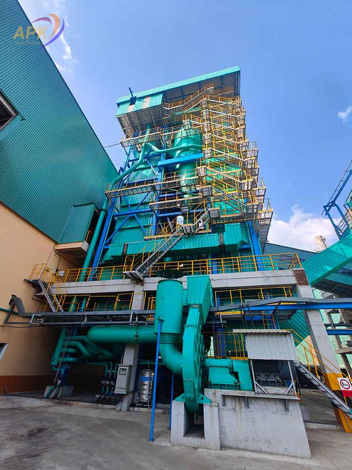

Công nghệ xeo giấy hiện đại: Tương lai của ngành công nghiệp giấy
Ngành công nghiệp giấy đã trải qua những bước tiến vượt bậc nhờ vào sự…

Công Ty TNHH Thương Mại APK Việt Nam
Chuyên cung cấp – sửa chữa – bảo dưỡng máy xeo giấy
Gọi 0838 342 218
Công Ty TNHH Thương Mại APK Việt Nam đã và đang dần chuyển mình trở thành một trong những doanh nghiệp dẫn đầu trong lĩnh vực thiết bị máy xeo giấy tại Việt Nam, Trung Quốc, Đài Loan… cùng rất nhiều quốc gia khác. Với sự cam kết về chất lượng và dịch vụ, tập thể APK đã xây dựng được giá trị niềm tin, sự tín nhiệm từ rất khách hàng và quý đối tác. Không chỉ dừng lại ở việc cung cấp, lặt đặt phụ tùng, linh kiện, máy sản xuất và các sản phẩm, mặt hàng giấy từ phân khúc trung bình đến cao cấp tới thị trường, mà chúng tôi còn nỗ lực phục vụ khách hàng bằng cách luôn đề cao dịch vụ hậu mãi tận tâm. Chữ “ tín “ chính là khởi nguồn sự phát triển của tập thể APK, APK luôn mong muốn có thể nhận được nụ cười và cái bắt tay của khách hàng và đối tác trước khi đi đến ký kết hợp đồng & bàn giao.
Sản phẩm của APK được sản xuất với công nghệ tiên tiến mới nhất tại Trung Quốc – một trong những quốc gia dẫn đầu trong việc sản xuất và cung cấp các loại máy xeo giấy hiện đại với nhiều ưu điểm nổi bật, vì vậy chúng tôi luôn tự tin khẳng định, sản phẩm của APK luôn đảm bảo chất lượng từ những chi tiết nhỏ nhất.


Lắp đặt máy xeo giấy không chỉ là một quy trình kỹ thuật mà còn là bước đầu tiên quan trọng để đảm bảo sản xuất ra những sản phẩm giấy chất lượng cao. Công ty APK Việt Nam, với nhiều năm kinh nghiệm trong lĩnh vực này, đã trở thành một trong những đơn vị hàng đầu cung cấp giải pháp lắp đặt máy xeo giấy.
Thời gian lắp đặt máy xeo giấy phụ thuộc vào kích thước và độ phức tạp của máy. Thông thường, quá trình này có thể kéo dài từ vài ngày đến vài tuần.
Chi phí lắp đặt máy xeo giấy thường dao động dựa trên nhiều yếu tố như loại máy, quy mô lắp đặt và dịch vụ hậu mãi đi kèm. Bạn nên liên hệ trực tiếp với APK Việt Nam để có báo giá cụ thể.
Có, việc bảo trì định kỳ máy xeo giấy là rất cần thiết để đảm bảo máy luôn hoạt động hiệu quả và kéo dài tuổi thọ cho máy.
Có, chúng tôi cung cấp đầy đủ linh kiện thay thế cho máy xeo giấy, đảm bảo khách hàng có thể duy trì hoạt động sản xuất một cách liên tục.

Trong lĩnh vực sản xuất và chế biến giấy, việc duy trì hoạt động hiệu quả của các máy móc là điều vô cùng quan trọng. Những chiếc máy xeo giấy không chỉ đơn thuần là những thiết bị cơ học mà còn là hệ thống phức tạp với nhiều bộ phận cần được chăm sóc đúng cách. Đặc biệt, việc sử dụng phụ kiện chính hãng cho máy xeo giấy có thể quyết định đến độ bền và hiệu suất làm việc của máy.
Trong bất kỳ ngành công nghiệp nào, việc sử dụng phụ kiện chính hãng không chỉ đảm bảo tính ổn định cho máy móc mà còn kéo dài tuổi thọ của thiết bị. Đối với ngành giấy, nơi độ chính xác và hiệu suất là yếu tố hàng đầu, sử dụng các linh kiện kém chất lượng có thể dẫn đến những hậu quả nghiêm trọng như hỏng hóc, gián đoạn sản xuất hoặc thậm chí là thiệt hại tài chính nghiêm trọng.
Dịch vụ tư vấn kỹ thuật cho máy xeo giấy là một yếu tố quan trọng trong việc đảm bảo hiệu quả sản xuất và chất lượng sản phẩm. Dưới đây là thông tin chi tiết về dịch vụ này, bao gồm các công việc cụ thể, lợi ích, quy trình của APK.
Dịch vụ tư vấn kỹ thuật giúp doanh nghiệp đảm bảo máy móc hoạt động ổn định, nâng cao hiệu suất sản xuất và giảm thiểu rủi ro kỹ thuật, từ đó duy trì chất lượng sản phẩm và tối ưu hóa chi phí vận hành.

Máy xeo giấy và phụ kiện máy xeo giấy do APK Việt Nam cung cấp. Giá sản phẩm: vui lòng gọi hotline.


Đối với sản phẩm phụ kiện, trong thời gian 5 ngày kể từ ngày nhận hàng, lắp đặt nếu sản phẩm bị trục trặc do lỗi kỹ thuật của nhà sản xuất, Quý khách được đổi lại sản phẩm mà không tốn bất kỳ khoản chi phí nào.
Ngành công nghiệp giấy đã trải qua những bước tiến vượt bậc nhờ vào sự…

Ngành công nghiệp giấy đang chứng kiến sự chuyển mình mạnh mẽ nhờ vào việc…

Máy ép lề (máy ép giấy phế liệu) là thiết bị quan trọng trong ngành…

Thiết bị máy xeo giấy tại Bình Dương đang trở thành một yếu tố then…
Liên hệ với chúng tôi để nhận tư vấn miễn phí về thiết bị máy xeo giấy, phụ kiện chính hãng và dịch vụ lắp đặt, sửa chữa, bảo dưỡng.
Gọi 0838 342 218Công ty: CÔNG TY TNHH THƯƠNG MẠI APK VIỆT NAM
Địa chỉ: Tổ Dân Phố Lũng Giang, Phường Tiên Du, Thành Phố Bắc Ninh, Việt Nam
Hotline: 0838 342 218
Email: congtyapk@gmail.com
 0838 342 218
0838 342 218
 Facebook chúng tôi
Facebook chúng tôi